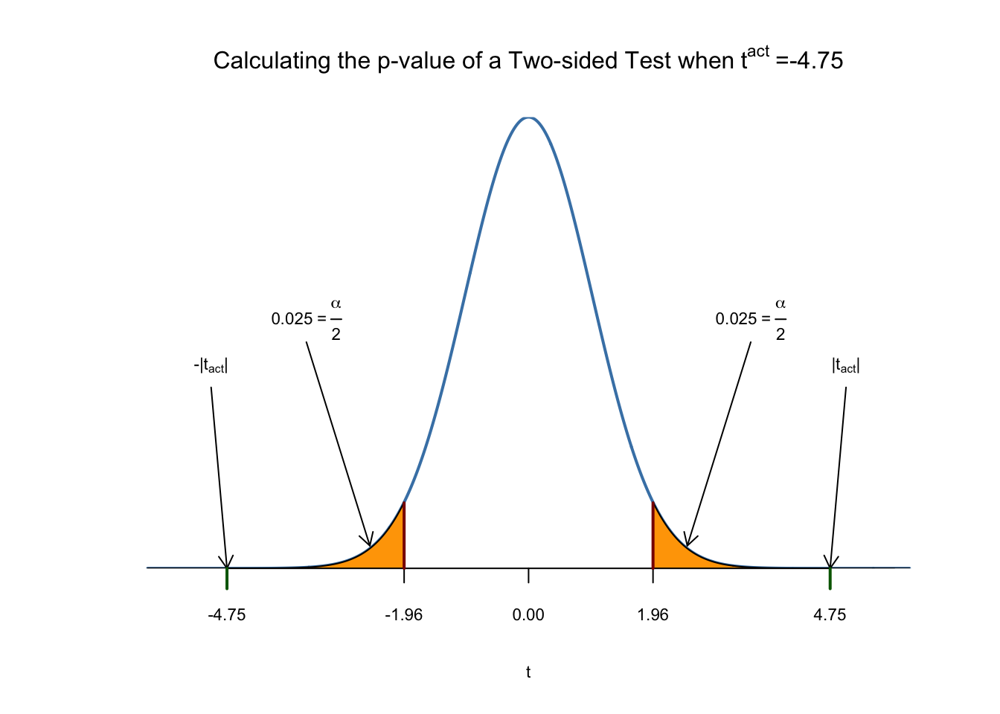
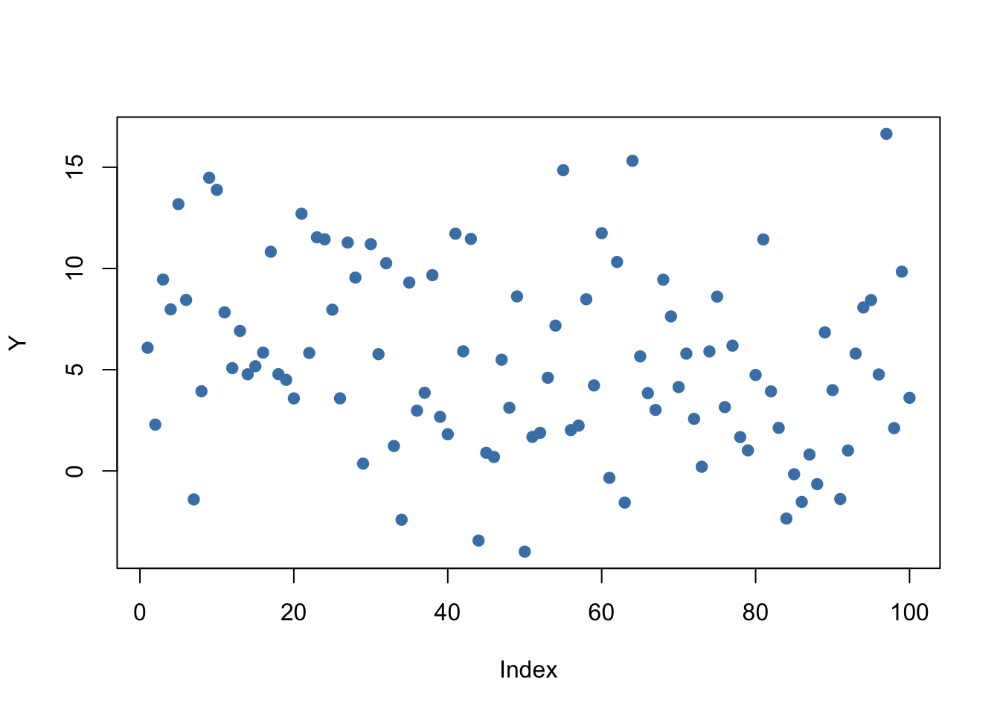
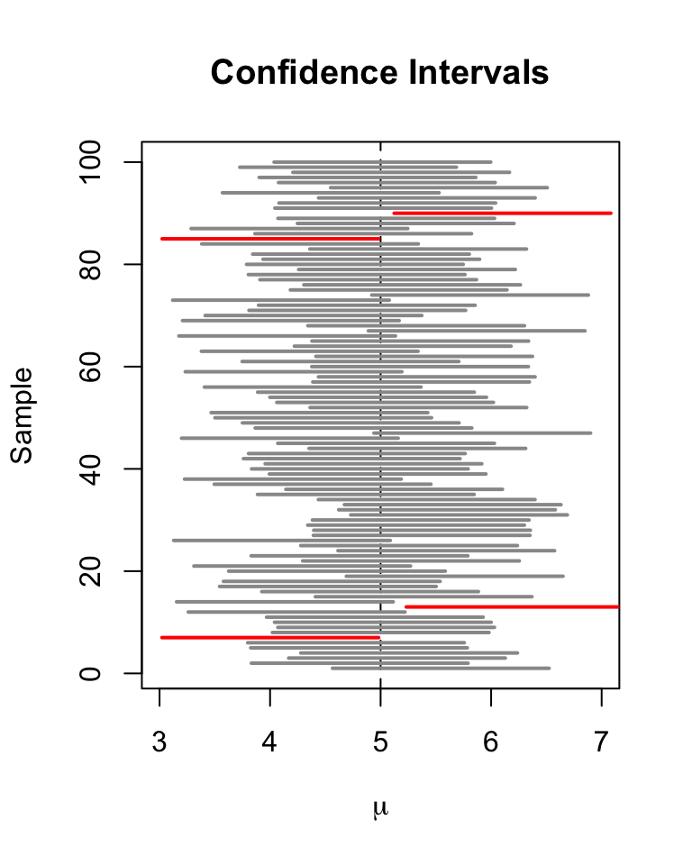
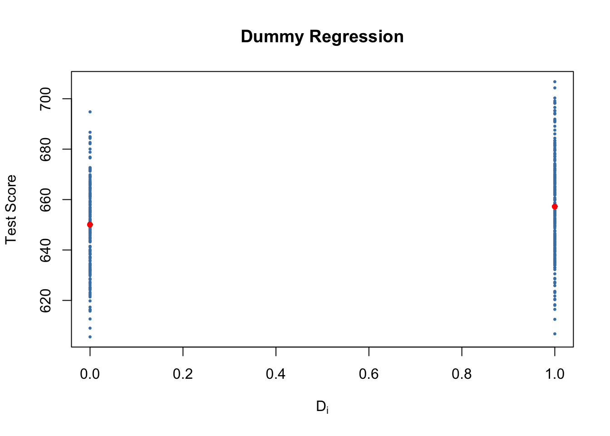
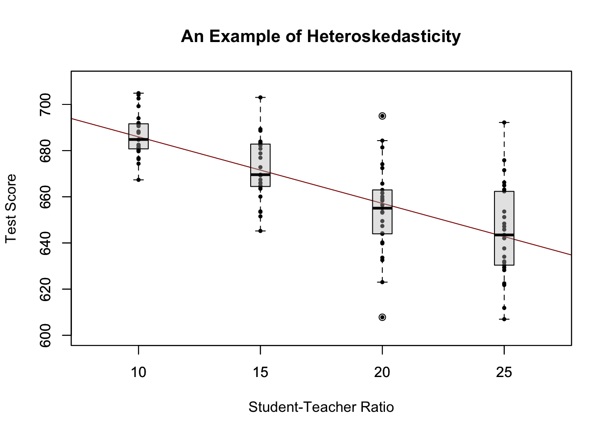
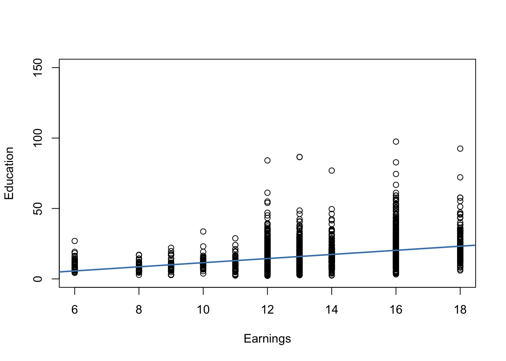
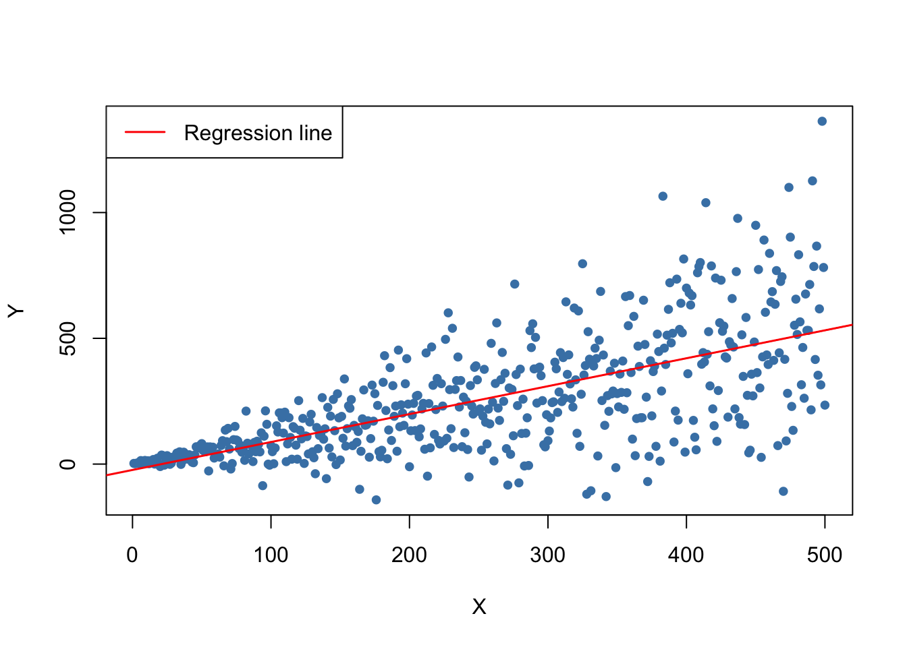
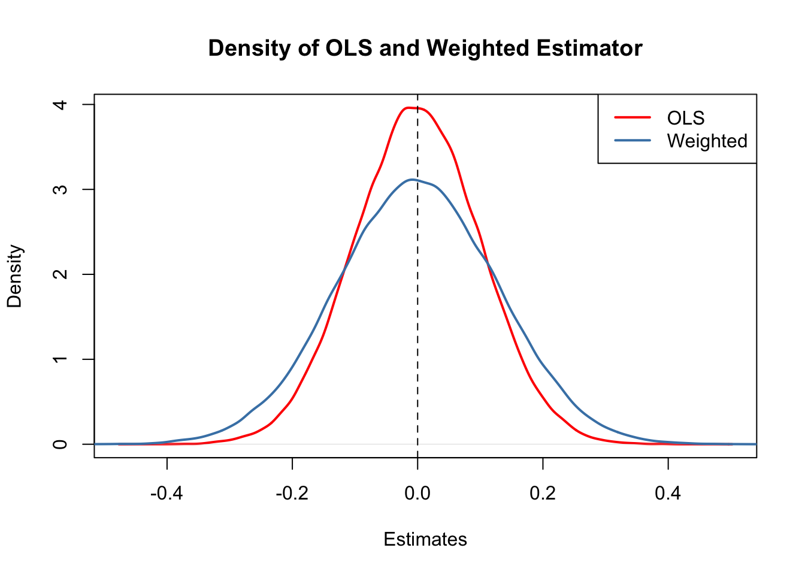
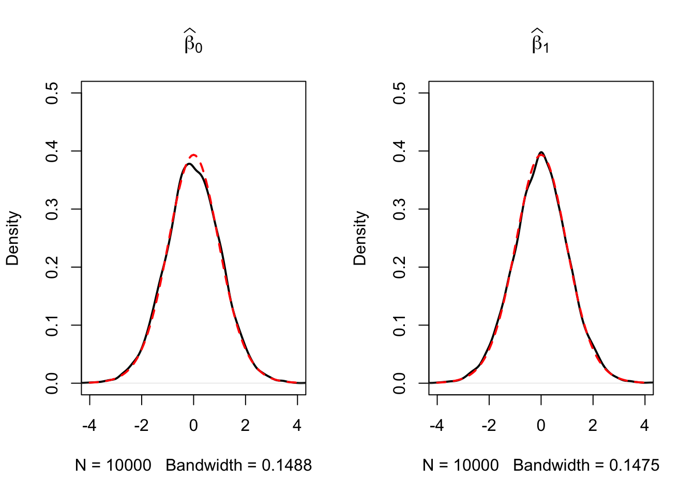

5 Hypothesis Tests and Confidence Intervals in SLR Model
This chapter continues our treatment of the simple linear regression model. The following subsections discuss how we may use our knowledge about the sampling distribution of the OLS estimator in order to make statements regarding its uncertainty.
These subsections cover the following topics:
Testing Hypotheses regarding regression coefficients.
Confidence intervals for regression coefficients.
Regression when \(X\) is a dummy variable.
Heteroskedasticity and Homoskedasticity.
The packages AER (Christian Kleiber and Zeileis 2008) and scales (Wickham, Pedersen, and Seidel 2023) are required for reproduction of the code chunks presented throughout this chapter. The package scales provides additional generic plot scaling methods. Make sure both packages are installed before you proceed. The safest way to do so is by checking whether the following code chunk executes without any errors.
5.1 Testing Two-Sided Hypotheses concerning the Slope Coefficient
Using the fact that \(\hat{\beta}_1\) is approximately normally distributed in large samples (see Key Concept 4.4), testing hypotheses about the true value \(\beta_1\) can be done as in Chapter 3.2.
Key Concept 5.1
General Form of the \(t\)-Statistic
Remember from Chapter 3 that a general \(t\)-statistic has the form \[ t = \frac{\text{estimated value} - \text{hypothesized value}}{\text{standard error of the estimator}}.\]
Key Concept 5.2
Testing Hypotheses regarding \(\beta_1\)
For testing the hypothesis \(H_0: \beta_1 = \beta_{1,0}\), we need to perform the following steps:
- Compute the standard error of \(\hat{\beta}_1\), \(SE(\hat{\beta}_1)\)
\[ SE(\hat{\beta}_1) = \sqrt{ \hat{\sigma}^2_{\hat{\beta}_1} } \ \ , \ \ \hat{\sigma}^2_{\hat{\beta}_1} = \frac{1}{n} \times \frac{\frac{1}{n-2} \sum_{i=1}^n (X_i - \overline{X})^2 \hat{u_i}^2 }{ \left[ \frac{1}{n} \sum_{i=1}^n (X_i - \overline{X})^2 \right]^2}. \]
- Compute the \(t\)-statistic
\[ t = \frac{\hat{\beta}_1 - \beta_{1,0}}{ SE(\hat{\beta}_1) }. \]
- Given a two sided alternative (\(H_1:\beta_1 \neq \beta_{1,0}\)) we reject at the \(5\%\) level if \(|t^{act}| > 1.96\) or, equivalently, if the \(p\)-value is less than \(0.05\).
Recall the definition of the \(p\)-value:
\[\begin{align*} p \text{-value} =& \, \text{Pr}_{H_0} \left[ \left| \frac{ \hat{\beta}_1 - \beta_{1,0} }{ SE(\hat{\beta}_1) } \right| > \left| \frac{ \hat{\beta}_1^{act} - \beta_{1,0} }{ SE(\hat{\beta}_1) } \right| \right] \\ =& \, \text{Pr}_{H_0} (|t| > |t^{act}|) \\ \approx& \, 2 \cdot \Phi(-|t^{act}|). \end{align*}\]
The last transformation is due to the normal approximation for large samples.
Consider again the OLS regression stored in linear_model from Chapter 4 that gave us the regression line
\[ \widehat{TestScore} \ = \underset{(9.47)}{698.9} - \underset{(0.49)}{2.28} \times STR \ , \ R^2=0.051 \ , \ SER=18.6. \]
Copy and execute the following code chunk if the above model object is not available in your working environment.
# load the `CASchools` dataset
data(CASchools)
# add student-teacher ratio
CASchools$STR <- CASchools$students/CASchools$teachers
# add average test-score
CASchools$score <- (CASchools$read + CASchools$math)/2
# estimate the model
linear_model <- lm(score ~ STR, data = CASchools) For testing a hypothesis concerning the slope parameter (the coefficient on \(STR\)), we need \(SE(\hat{\beta}_1)\), the standard error of the respective point estimator. As is common in the literature, standard errors are presented in parentheses below the point estimates.
Key Concept 5.1 reveals that it is rather cumbersome to compute the standard error and thereby the \(t\)-statistic by hand. The question you should be asking yourself right now is: can we obtain these values with minimum effort using R? Yes, we can. Let us first use summary() to get a summary on the estimated coefficients in linear_model.
Note: Throughout the textbook, robust standard errors are reported. We consider it instructive to keep things simple at the beginning and thus start out with simple examples that do not allow for robust inference. Standard errors that are robust to heteroskedasticity are introduced in Chapter 5.4 where we also demonstrate how they can be computed using R. A discussion of heteroskedasticity-autocorrelation robust standard errors takes place in Chapter 15.
# print the summary of the coefficients to the console
summary(linear_model)$coefficients
#> Estimate Std. Error t value Pr(>|t|)
#> (Intercept) 698.932949 9.4674911 73.824516 6.569846e-242
#> STR -2.279808 0.4798255 -4.751327 2.783308e-06The second column of the coefficients’ summary reports \(SE(\hat\beta_0)\) and \(SE(\hat\beta_1)\). Also, in the third column t value, we find \(t\)-statistics \(t^{act}\) suitable for tests of the separate hypotheses \(H_0: \beta_0=0\) and \(H_0: \beta_1=0\). Furthermore, the output provides us with \(p\)-values corresponding to both tests against the two-sided alternatives \(H_1:\beta_0\neq0\) respectively, \(H_1:\beta_1\neq0\) in the fourth column of the table.
Let us have a closer look at the test of
\[H_0: \beta_1=0 \ \ \ vs. \ \ \ H_1: \beta_1 \neq 0.\]
We have \[ t^{act} = \frac{-2.279808 - 0}{0.4798255} \approx - 4.75. \]
What does this tell us about the significance of the estimated coefficient? We reject the null hypothesis at the \(5\%\) level of significance since \(|t^{act}| > 1.96\). That is, the observed test statistic falls into the rejection region as \(p\text{-value} = 2.78\cdot 10^{-6} < 0.05\). We conclude that the coefficient is significantly different from zero. In other words, we reject the hypothesis that the class size has no influence on the students test scores at the \(5\%\) level.
Note that although the difference is negligible in the present case as we will see later, summary() does not perform the normal approximation but calculates \(p\)-values using the \(t\)-distribution instead. Generally, the degrees of freedom of the assumed \(t\)-distribution are determined in the following manner:
\[ \text{DF} = n - k - 1, \]
where \(n\) is the number of observations used to estimate the model and \(k\) is the number of regressors, excluding the intercept. In our case, we have \(n=420\) observations and the only regressor is \(STR\) so \(k=1\). The simplest way to determine the model degrees of freedom is:
Hence, for the assumed sampling distribution of \(\hat\beta_1\) we have
\[\hat\beta_1 \sim t_{418}\] such that the \(p\)-value for a two-sided significance test can be obtained by executing the following code:
The result is very close to the value provided by summary(). However since \(n\) is sufficiently large one could just as well use the standard normal density to compute the \(p\)-value:
The difference is indeed negligible. These findings tell us that, if \(H_0: \beta_1 = 0\) is true and we were to repeat the whole process of gathering observations and estimating the model, observing a \(\hat\beta_1 \geq |-2.28|\) is very unlikely!
Using R we may visualize how such a statement is made when using the normal approximation. This reflects the principles depicted in figure 5.1 in the book. Do not let the following code chunk deter you: the code is somewhat longer than the usual examples and looks unappealing but there is a lot of repetition since color shadings and annotations are added on both tails of the normal distribution. We recommend to execute the code step by step in order to see how the graph is augmented with the annotations.
# Plot the standard normal on the support [-6,6]
t <- seq(-6, 6, 0.01)
plot(x = t,
y = dnorm(t, 0, 1),
type = "l",
col = "steelblue",
lwd = 2,
yaxs = "i",
axes = F,
ylab = "",
main = expression("Calculating the p-value of a Two-sided Test when"
~ t^act ~ "=-4.75"),
cex.lab = 0.7,
cex.main = 1)
tact <- -4.75
axis(1, at = c(0, -1.96, 1.96, -tact, tact), cex.axis = 0.7)
# Shade the critical regions using polygon():
# critical region in left tail
polygon(x = c(-6, seq(-6, -1.96, 0.01), -1.96),
y = c(0, dnorm(seq(-6, -1.96, 0.01)), 0),
col = 'orange')
# critical region in right tail
polygon(x = c(1.96, seq(1.96, 6, 0.01), 6),
y = c(0, dnorm(seq(1.96, 6, 0.01)), 0),
col = 'orange')
# Add arrows and texts indicating critical regions and the p-value
arrows(-3.5, 0.2, -2.5, 0.02, length = 0.1)
arrows(3.5, 0.2, 2.5, 0.02, length = 0.1)
arrows(-5, 0.16, -4.75, 0, length = 0.1)
arrows(5, 0.16, 4.75, 0, length = 0.1)
text(-3.5, 0.22,
labels = expression("0.025"~"="~over(alpha, 2)),
cex = 0.7)
text(3.5, 0.22,
labels = expression("0.025"~"="~over(alpha, 2)),
cex = 0.7)
text(-5, 0.18,
labels = expression(paste("-|",t[act],"|")),
cex = 0.7)
text(5, 0.18,
labels = expression(paste("|",t[act],"|")),
cex = 0.7)
# Add ticks indicating critical values at the 0.05-level, t^act and -t^act
rug(c(-1.96, 1.96), ticksize = 0.145, lwd = 2, col = "darkred")
rug(c(-tact, tact), ticksize = -0.0451, lwd = 2, col = "darkgreen")
The \(p\)-Value is the area under the curve to left of \(-4.75\) plus the area under the curve to the right of \(4.75\). As we already know from the calculations above, this value is very small.
5.2 Confidence Intervals for Regression Coefficients
As we already know, estimates of the regression coefficients \(\beta_0\) and \(\beta_1\) are subject to sampling uncertainty, see Chapter 4. Therefore, we will never exactly estimate the true value of these parameters from sample data in an empirical application. However, we may construct confidence intervals for the intercept and the slope parameter.
A \(95\%\) confidence interval for \(\beta_i\) has two equivalent definitions:
- The interval is the set of values for which a hypothesis test to the level of \(5\%\) cannot be rejected.
- The interval has a probability of \(95\%\) to contain the true value of \(\beta_i\). So in \(95\%\) of all samples that could be drawn, the confidence interval will cover the true value of \(\beta_i\).
We also say that the interval has a confidence level of \(95\%\). The idea of the confidence interval is summarized in Key Concept 5.3.
Key Concept 5.3
A Confidence Interval for \(\beta_i\)
Imagine you could draw all possible random samples of given size. The interval that contains the true value \(\beta_i\) in \(95\%\) of all samples is given by the expression
\[ \text{CI}_{0.95}^{\beta_i} = \left[ \hat{\beta}_i - 1.96 \times SE(\hat{\beta}_i) \, , \, \hat{\beta}_i + 1.96 \times SE(\hat{\beta}_i) \right]. \]
Equivalently, this interval can be seen as the set of null hypotheses for which a \(5\%\) two-sided hypothesis test does not reject.
Simulation Study: Confidence Intervals
To get a better understanding of confidence intervals we conduct another simulation study. For now, assume that we have the following sample of \(n=100\) observations on a single variable \(Y\) where
\[ Y_i \overset{i.i.d}{\sim} \mathcal{N}(5,25), \ i = 1, \dots, 100.\]
# set seed for reproducibility
set.seed(4)
# generate and plot the sample data
Y <- rnorm(n = 100,
mean = 5,
sd = 5)
plot(Y,
pch = 19,
col = "steelblue")
We assume that the data is generated by the model
\[ Y_i = \mu + \epsilon_i, \]
where \(\mu\) is an unknown constant and we know that \(\epsilon_i \overset{i.i.d.}{\sim} \mathcal{N}(0,25)\). In this model, the OLS estimator for \(\mu\) is given by \[ \hat\mu = \overline{Y} = \frac{1}{n} \sum_{i=1}^n Y_i, \] i.e., the sample average of the \(Y_i\). It further holds that
\[ SE(\hat\mu) = \frac{\sigma_{\epsilon}}{\sqrt{n}} = \frac{5}{\sqrt{100}} \]
(see Chapter 2) a large-sample \(95\%\) confidence interval for \(\mu\) is then given by
\[\begin{equation} CI^{\mu}_{0.95} = \left[\hat\mu - 1.96 \times \frac{5}{\sqrt{100}} \ , \ \hat\mu + 1.96 \times \frac{5}{\sqrt{100}} \right]. \tag{5.1} \end{equation}\]
It is fairly easy to compute this interval in R by hand. The following code chunk generates a named vector containing the interval bounds:
cbind(CIlower = mean(Y) - 1.96 * 5 / 10, CIupper = mean(Y) + 1.96 * 5 / 10)
#> CIlower CIupper
#> [1,] 4.502625 6.462625Knowing that \(\mu = 5\) we see that, for our example data, the confidence interval covers the true value.
As opposed to real world examples, we can use R to get a better understanding of confidence intervals by repeatedly sampling data, estimating \(\mu\) and computing the confidence interval for \(\mu\) as in (5.1).
The procedure is as follows:
- We initialize the vectors lower and upper in which the simulated interval limits are to be saved. We want to simulate \(10000\) intervals so both vectors are set to have this length.
- We use a for() loop to sample \(100\) observations from the \(\mathcal{N}(5,25)\) distribution and compute \(\hat\mu\) as well as the boundaries of the confidence interval in every iteration of the loop.
- At last we join lower and upper in a matrix.
# set seed
set.seed(1)
# initialize vectors of lower and upper interval boundaries
lower <- numeric(10000)
upper <- numeric(10000)
# loop sampling / estimation / CI
for(i in 1:10000) {
Y <- rnorm(100, mean = 5, sd = 5)
lower[i] <- mean(Y) - 1.96 * 5 / 10
upper[i] <- mean(Y) + 1.96 * 5 / 10
}
# join vectors of interval bounds in a matrix
CIs <- cbind(lower, upper)According to Key Concept 5.3 we expect that the fraction of the \(10000\) simulated intervals saved in the matrix CIs that contain the true value \(\mu=5\) should be roughly \(95\%\). We can easily check this using logical operators.
The simulation shows that the fraction of intervals covering \(\mu=5\), i.e., those intervals for which \(H_0: \mu = 5\) cannot be rejected is close to the theoretical value of \(95\%\).
Let us draw a plot of the first \(100\) simulated confidence intervals and indicate those which do not cover the true value of \(\mu\). We do this via horizontal lines representing the confidence intervals on top of each other.
# identify intervals not covering mu
# (4 intervals out of 100)
ID <- which(!(CIs[1:100, 1] <= 5 & 5 <= CIs[1:100, 2]))
# initialize the plot
plot(0,
xlim = c(3, 7),
ylim = c(1, 100),
ylab = "Sample",
xlab = expression(mu),
main = "Confidence Intervals")
# set up color vector
colors <- rep(gray(0.6), 100)
colors[ID] <- "red"
# draw reference line at mu=5
abline(v = 5, lty = 2)
# add horizontal bars representing the CIs
for(j in 1:100) {
lines(c(CIs[j, 1], CIs[j, 2]),
c(j, j),
col = colors[j],
lwd = 2)
}
For the first \(100\) samples, the true null hypothesis is rejected in four cases so these intervals do not cover \(\mu=5\). We have indicated the intervals which lead to a rejection of the null red.
Let us now come back to the example of test scores and class sizes. The regression model from Chapter 4 is stored in linear_model. An easy way to get \(95\%\) confidence intervals for \(\beta_0\) and \(\beta_1\), the coefficients on (intercept) and STR, is to use the function confint(). We only have to provide a fitted model object as an input to this function. The confidence level is set to \(95\%\) by default but can be modified by setting the argument level, see ?confint.
# compute 95% confidence interval for coefficients in 'linear_model'
confint(linear_model)
#> 2.5 % 97.5 %
#> (Intercept) 680.32312 717.542775
#> STR -3.22298 -1.336636Let us check if the calculation is done as we expect it to be for \(\beta_1\), the coefficient on STR.
# compute 95% confidence interval for coefficients in 'linear_model' by hand
lm_sum <- summary(linear_model)
c("lower" = lm_sum$coef[2,1] - qt(0.975, df = lm_sum$df[2]) * lm_sum$coef[2, 2],
"upper" = lm_sum$coef[2,1] + qt(0.975, df = lm_sum$df[2]) * lm_sum$coef[2, 2])
#> lower upper
#> -3.222980 -1.336636The upper and the lower bounds coincide. We have used the \(0.975\)-quantile of the \(t_{418}\) distribution to get the exact result reported by confint. Obviously, this interval does not contain the value zero which, as we have already seen in the previous section, leads to the rejection of the null hypothesis \(\beta_{1,0} = 0\).
5.3 Regression when X is a Binary Variable
Instead of using a continuous regressor \(X\), we might be interested in running the regression
\[ Y_i = \beta_0 + \beta_1 D_i + u_i, \tag{5.2} \]
where \(D_i\) is a binary variable, a so-called dummy variable. For example, we may define \(D_i\) as follows:
\[ D_i = \begin{cases} 1 \ \ \text{if $STR$ in $i^{th}$ school district < 20} \\ 0 \ \ \text{if $STR$ in $i^{th}$ school district $\geq$ 20}. \\ \end{cases} \tag{5.3} \]
The regression model now is
\[ TestScore_i = \beta_0 + \beta_1 D_i + u_i. \tag{5.4} \]
Let us see how these data look like in a scatter plot:
# Create the dummy variable as defined above
CASchools$D <- CASchools$STR < 20
# Compute the average score when D=1 (low STR)
mean.score.for.D.1 <- mean(CASchools$score[CASchools$D == TRUE])
# Compute the average score when D=0 (high STR)
mean.score.for.D.0 <- mean(CASchools$score[CASchools$D == FALSE])
plot( CASchools$score ~ CASchools$D, # provide the data to be plotted
pch = 19, # use filled circles as plot symbols
cex = 0.5, # set size of plot symbols to 0.5
col = "Steelblue", # set the symbols' color to "Steelblue"
xlab = expression(D[i]), # Set title and axis names
ylab = "Test Score",
main = "Dummy Regression")
# Add the average for each group
points( y = mean.score.for.D.0, x = 0, col="red", pch = 19)
points( y = mean.score.for.D.1, x = 1, col="red", pch = 19)
With \(D\) as the regressor, it is not useful to think of \(\beta_1\) as a slope parameter since \(D_i \in \{0,1\}\), i.e., we only observe two discrete values instead of a continuum of regressor values. There is no continuous line depicting the conditional expectation function \(E(TestScore_i | D_i)\) since this function is solely defined for \(x\)-positions \(0\) and \(1\).
Therefore, the interpretation of the coefficients in this regression model is as follows:
\(E(Y_i | D_i = 0) = \beta_0\), so \(\beta_0\) is the expected test score in districts where \(D_i=0\) and \(STR\) is above \(20\).
\(E(Y_i | D_i = 1) = \beta_0 + \beta_1\) or, using the result above, \(\beta_1 = E(Y_i | D_i = 1) - E(Y_i | D_i = 0)\). Thus, \(\beta_1\) is the difference in group-specific expectations, i.e., the difference in expected test score between districts with \(STR < 20\) and those with \(STR \geq 20\).
We will now use R to estimate the dummy regression model as defined by the equations (5.2) and (5.3) .
# estimate the dummy regression model
dummy_model <- lm(score ~ D, data = CASchools)
summary(dummy_model)
#>
#> Call:
#> lm(formula = score ~ D, data = CASchools)
#>
#> Residuals:
#> Min 1Q Median 3Q Max
#> -50.496 -14.029 -0.346 12.884 49.504
#>
#> Coefficients:
#> Estimate Std. Error t value Pr(>|t|)
#> (Intercept) 650.077 1.393 466.666 < 2e-16 ***
#> DTRUE 7.169 1.847 3.882 0.00012 ***
#> ---
#> Signif. codes: 0 '***' 0.001 '**' 0.01 '*' 0.05 '.' 0.1 ' ' 1
#>
#> Residual standard error: 18.74 on 418 degrees of freedom
#> Multiple R-squared: 0.0348, Adjusted R-squared: 0.0325
#> F-statistic: 15.07 on 1 and 418 DF, p-value: 0.0001202The vector CASchools$D has the type logical (to see this, use typeof(CASchools$D)) which is shown in the output of summary(dummy_model): the label DTRUE states that all entries TRUE are coded as 1 and all entries FALSE are coded as 0. Thus, the interpretation of the coefficient DTRUE is same as stated above for \(\beta_1\).
One can see that the expected test score in districts with \(STR < 20\) (\(D_i = 1\)) is predicted to be \(650.1 + 7.17 = 657.27\) while districts with \(STR \geq 20\) (\(D_i = 0\)) are expected to have an average test score of only \(650.1\).
Group specific predictions can be added to the plot by execution of the following code chunk.
# add group specific predictions to the plot
points(x = CASchools$D,
y = predict(dummy_model),
col = "red",
pch = 20)Here we use the function predict() to obtain estimates of the group specific means. The red dots represent these sample group averages. Accordingly, \(\hat{\beta}_1 = 7.17\) can be seen as the difference in group averages.
summary(dummy_model) also answers the question whether there is a statistically significant difference in group means. This in turn would support the hypothesis that students perform differently when they are taught in small classes. We can assess this by a two-tailed test of the hypothesis \(H_0: \beta_1 = 0\). Conveniently, the \(t\)-statistic and the corresponding \(p\)-value for this test are computed by summary().
Since t value \(= 3.88 > 1.96\), we reject the null hypothesis at the \(5\%\) level of significance. The same conclusion results when using the \(p\)-value, which reports significance up to the \(0.00012\%\) level.
As done with linear_model, we may alternatively use the function confint() to compute a \(95\%\) confidence interval for the true difference in means and see if the hypothesized value is an element of this confidence set.
# confidence intervals for coefficients in the dummy regression model
confint(dummy_model)
#> 2.5 % 97.5 %
#> (Intercept) 647.338594 652.81500
#> DTRUE 3.539562 10.79931We reject the hypothesis that there is no difference between group means at the \(5\%\) significance level since \(\beta_{1,0} = 0\) lies outside of \([3.54, 10.8]\), the \(95\%\) confidence interval for the coefficient on \(D\).
5.4 Heteroskedasticity and Homoskedasticity
All inference made in the previous chapters relies on the assumption that the error variance does not vary as regressor values change. But this will often not be the case in empirical applications.
Key Concept 5.4
Heteroskedasticity and Homoskedasticity
The error term of our regression model is homoskedastic if the variance of the conditional distribution of \(u_i\) given \(X_i\), \(Var(u_i|X_i=x)\), is constant for all observations in our sample: \[ \text{Var}(u_i|X_i=x) = \sigma^2 \ \forall \ i=1,\dots,n. \]
If instead there is dependence of the conditional variance of \(u_i\) on \(X_i\), the error term is said to be heteroskedastic. We then write \[ \text{Var}(u_i|X_i=x) = \sigma_i^2 \ \forall \ i=1,\dots,n. \]
Homoskedasticity is a special case of heteroskedasticity.
For a better understanding of heteroskedasticity, we generate some bivariate heteroskedastic data, estimate a linear regression model and then use box plots to depict the conditional distributions of the residuals.
# load scales package for adjusting color opacities
library(scales)
# generate some heteroskedastic data:
# set seed for reproducibility
set.seed(123)
# set up vector of x coordinates
x <- rep(c(10, 15, 20, 25), each = 25)
# initialize vector of errors
e <- c()
# sample 100 errors such that the variance increases with x
e[1:25] <- rnorm(25, sd = 10)
e[26:50] <- rnorm(25, sd = 15)
e[51:75] <- rnorm(25, sd = 20)
e[76:100] <- rnorm(25, sd = 25)
# set up y
y <- 720 - 3.3 * x + e
# Estimate the model
mod <- lm(y ~ x)
# Plot the data
plot(x = x,
y = y,
main = "An Example of Heteroskedasticity",
xlab = "Student-Teacher Ratio",
ylab = "Test Score",
cex = 0.5,
pch = 19,
xlim = c(8, 27),
ylim = c(600, 710))
# Add the regression line to the plot
abline(mod, col = "darkred")
# Add boxplots to the plot
boxplot(formula = y ~ x,
add = TRUE,
at = c(10, 15, 20, 25),
col = alpha("gray", 0.4),
border = "black")
We have used the formula argument y ~ x in boxplot() to specify that we want to split up the vector y into groups according to x. boxplot(y ~ x) generates a boxplot for each of the groups in y defined by x.
For this artificial data it is clear that the conditional error variances differ. Specifically, we observe that the variance in test scores (and therefore the variance of the errors committed) increases with the student teacher ratio.
A Real-World Example for Heteroskedasticity
Think about the economic value of education: if there were no expected economic value-added to receiving university education, you probably would not be reading this script right now. A starting point to empirically verify such a relation is to have data on working individuals. More precisely, we need data on wages and education of workers in order to estimate a model like
\[ wage_i = \beta_0 + \beta_1 \cdot education_i + u_i. \]
What can be presumed about this relation? It is likely that, on average, higher educated workers earn more than workers with less education, so we expect to estimate an upward sloping regression line. Also, it seems plausible that earnings of better educated workers have a higher dispersion than those of low-skilled workers: solid education is not a guarantee for a high salary so even highly qualified workers take on low-income jobs. However, they are more likely to meet the requirements for the well-paid jobs than workers with less education for whom opportunities in the labor market are much more limited.
To verify this empirically we may use real data on hourly earnings and the number of years of education of employees. Such data can be found in CPSSWEducation. This data set is part of the package AER and comes from the Current Population Survey (CPS) which is conducted periodically by the Bureau of Labor Statistics in the United States.
The subsequent code chunks demonstrate how to import the data into R and how to produce a plot in the fashion of Figure 5.3 in the book.
# load package and attach data
library(AER)
data("CPSSWEducation")
attach(CPSSWEducation)
# get an overview
summary(CPSSWEducation)
#> age gender earnings education
#> Min. :29.0 female:1202 Min. : 2.137 Min. : 6.00
#> 1st Qu.:29.0 male :1748 1st Qu.:10.577 1st Qu.:12.00
#> Median :29.0 Median :14.615 Median :13.00
#> Mean :29.5 Mean :16.743 Mean :13.55
#> 3rd Qu.:30.0 3rd Qu.:20.192 3rd Qu.:16.00
#> Max. :30.0 Max. :97.500 Max. :18.00
# estimate a simple regression model
labor_model <- lm(earnings ~ education)
# plot observations and add the regression line
plot(education,
earnings,
xlab="Earnings",
ylab="Education",
ylim = c(0, 150))
abline(labor_model,
col = "steelblue",
lwd = 2)
The plot reveals that the mean of the distribution of earnings increases with the level of education. This is also supported by a formal analysis: the estimated regression model stored in labor_model shows that there is a positive relation between years of education and earnings.
# print the contents of labor_model to the console
labor_model
#>
#> Call:
#> lm(formula = earnings ~ education)
#>
#> Coefficients:
#> (Intercept) education
#> -3.134 1.467The estimated regression equation states that, on average, an additional year of education increases a worker’s hourly earnings by about \(\$ 1.47\). Once more we use confint() to obtain a \(95\%\) confidence interval for both regression coefficients.
# compute a 95% confidence interval for the coefficients in the model
confint(labor_model)
#> 2.5 % 97.5 %
#> (Intercept) -5.015248 -1.253495
#> education 1.330098 1.603753Since the interval is \([1.33, 1.60]\) we can reject the hypothesis that the coefficient on education is zero at the \(5\%\) level.
Furthermore, the plot indicates that there is heteroskedasticity: if we assume the regression line to be a reasonably good representation of the conditional mean function \(E(earnings_i\vert education_i)\), the dispersion of hourly earnings around that function clearly increases with the level of education, i.e., the variance of the distribution of earnings increases. In other words: the variance of the errors (the errors made in explaining earnings by education) increases with education so that the regression errors are heteroskedastic.
This example makes a case that the assumption of homoskedasticity is doubtful in economic applications. Should we care about heteroskedasticity? Yes, we should. As explained in the next section, heteroskedasticity can have serious negative consequences in hypothesis testing, if we ignore it.
Should We Care About Heteroskedasticity?
To answer the question whether we should worry about heteroskedasticity being present, consider the variance of \(\hat\beta_1\) under the assumption of homoskedasticity. In this case we have
\[ \sigma^2_{\hat\beta_1} = \frac{\sigma^2_u}{n \cdot \sigma^2_X}, \tag{5.5} \]
which is a simplified version of the general equation (4.1) presented in Key Concept 4.4. See Appendix 5.1 of the book for details on the derivation. summary() estimates (5.5) by
\[ \overset{\sim}{\sigma}^2_{\hat\beta_1} = \frac{SER^2}{\sum_{i=1}^n (X_i - \overline{X})^2} \ \ \text{where} \ \ SER=\frac{1}{n-2} \sum_{i=1}^n \hat u_i^2. \]
Thus summary() estimates the homoskedasticity-only standard error
\[ \sqrt{ \overset{\sim}{\sigma}^2_{\hat\beta_1} } = \sqrt{ \frac{SER^2}{\sum_{i=1}^n(X_i - \overline{X})^2} }. \]
This is in fact an estimator for the standard deviation of the estimator \(\hat{\beta}_1\) that is inconsistent for the true value \(\sigma^2_{\hat\beta_1}\) when there is heteroskedasticity. The implication is that \(t\)-statistics computed in the manner of Key Concept 5.1 do not follow a standard normal distribution, even in large samples. This issue may invalidate inference when using the previously treated tools for hypothesis testing: we should be cautious when making statements about the significance of regression coefficients on the basis of \(t\)-statistics as computed by summary() or confidence intervals produced by confint() if it is doubtful for the assumption of homoskedasticity to hold!
We will now use R to compute the homoskedasticity-only standard error for \(\hat{\beta}_1\) in the regression model labor_model by hand and see that it matches the value produced by summary().
# Store model summary in 'model'
model <- summary(labor_model)
# Extract the standard error of the regression from model summary
SER <- model$sigma
# Compute the variation in 'education'
V <- (nrow(CPSSWEducation)-1) * var(education)
# Compute the standard error of the slope parameter's estimator and print it
SE.beta_1.hat <- sqrt(SER^2/V)
SE.beta_1.hat
#> [1] 0.06978281
# Use logical operators to see if the value computed by hand matches the one provided
# in mod$coefficients. Round estimates to four decimal places
round(model$coefficients[2, 2], 4) == round(SE.beta_1.hat, 4)
#> [1] TRUEIndeed, the estimated values are equal.
Computation of Heteroskedasticity-Robust Standard Errors
Consistent estimation of \(\sigma_{\hat{\beta}_1}\) under heteroskedasticity is granted when the following robust estimator is used.
\[ SE(\hat{\beta}_1) = \sqrt{ \frac{1}{n} \cdot \frac{ \frac{1}{n} \sum_{i=1}^n (X_i - \overline{X})^2 \hat{u}_i^2 }{ \left[ \frac{1}{n} \sum_{i=1}^n (X_i - \overline{X})^2 \right]^2}. } \tag{5.6} \]
Standard error estimates computed this way are also referred to as Eicker-Huber-White standard errors, the most frequently cited paper on this is White (1980).
It can be quite cumbersome to do this calculation by hand. Luckily certain R functions exist, serving this purpose. An example of such function is vcovHC() is part of the package sandwich.6 This function can compute a variety of standard errors. The one brought forward in (5.6) is computed when the argument type is set to “HC0”. Most of the examples presented in the book rely on a slightly different formula which is the default in the statistics package STATA:
\[\begin{align} SE(\hat{\beta}_1)_{HC1} = \sqrt{ \frac{1}{n} \cdot \frac{ \frac{1}{n-2} \sum_{i=1}^n (X_i - \overline{X})^2 \hat{u}_i^2 }{ \left[ \frac{1}{n} \sum_{i=1}^n (X_i - \overline{X})^2 \right]^2}.} \tag{5.2} \end{align}\]
The difference is that we multiply by \(\frac{1}{n-2}\) in the numerator of (5.2). This is a degrees of freedom correction and was considered by MacKinnon and White (1985). To get vcovHC() to use (5.2), we have to set type = “HC1”.
Let us now compute robust standard error estimates for the coefficients in linear_model.
# compute heteroskedasticity-robust standard errors
vcov <- vcovHC(linear_model, type = "HC1")
vcov
#> (Intercept) STR
#> (Intercept) 107.419993 -5.3639114
#> STR -5.363911 0.2698692The output of vcovHC() is the variance-covariance matrix of coefficient estimates. We are interested in the square root of the diagonal elements of this matrix, i.e., the standard error estimates.
When we have k > 1 regressors, writing down the equations for a regression model becomes very messy. A more convenient way to denote and estimate so-called multiple regression models (see Chapter 6) is by using matrix algebra. This is why functions like vcovHC() produce matrices. In the simple linear regression model, the variances and covariances of the estimators can be gathered in the symmetric variance-covariance matrix
\[\begin{equation} \text{Var} \begin{pmatrix} \hat\beta_0 \\ \hat\beta_1 \end{pmatrix} = \begin{pmatrix} \text{Var}(\hat\beta_0) & \text{Cov}(\hat\beta_0,\hat\beta_1) \\ \text{Cov}(\hat\beta_0,\hat\beta_1) & \text{Var}(\hat\beta_1) \end{pmatrix}, \end{equation}\]
so vcovHC() gives us \(\widehat{\text{Var}}(\hat\beta_0)\), \(\widehat{\text{Var}}(\hat\beta_1)\) and \(\widehat{\text{Cov}}(\hat\beta_0,\hat\beta_1)\), but most of the time we are interested in the diagonal elements of the estimated matrix.
# compute the square root of the diagonal elements in vcov
robust_se <- sqrt(diag(vcov))
robust_se
#> (Intercept) STR
#> 10.3643617 0.5194893Now assume we want to generate a coefficient summary as provided by summary() but with robust standard errors of the coefficient estimators, robust \(t\)-statistics and corresponding \(p\)-values for the regression model linear_model. This can be done using coeftest() from the package lmtest, see ?coeftest. Further we specify in the argument vcov. that vcov, the Eicker-Huber-White estimate of the variance matrix we have computed before, should be used.
# we invoke the function `coeftest()` on our model
coeftest(linear_model, vcov. = vcov)
#>
#> t test of coefficients:
#>
#> Estimate Std. Error t value Pr(>|t|)
#> (Intercept) 698.93295 10.36436 67.4362 < 2.2e-16 ***
#> STR -2.27981 0.51949 -4.3886 1.447e-05 ***
#> ---
#> Signif. codes: 0 '***' 0.001 '**' 0.01 '*' 0.05 '.' 0.1 ' ' 1We see that the values reported in the column Std.Error are equal those from sqrt(diag(vcov)).
How severe are the implications of using homoskedasticity-only standard errors in the presence of heteroskedasticity? The answer is: it depends. As mentioned above we face the risk of drawing wrong conclusions when conducting significance tests.
Let us illustrate this by generating another example of a heteroskedastic data set and using it to estimate a simple regression model. We take
\[ Y_i = \beta_1 \cdot X_i + u_i \ \ , \ \ u_i \overset{i.i.d.}{\sim} \mathcal{N}(0,0.36 \cdot X_i^2) \]
with \(\beta_1=1\) as the data generating process. Clearly, the assumption of homoskedasticity is violated here since the variance of the errors is a nonlinear, increasing function of \(X_i\) but the errors have zero mean and are i.i.d. such that the assumptions made in Key Concept 4.3 are not violated. As before, we are interested in estimating \(\beta_1\).
set.seed(905)
# generate heteroskedastic data
X <- 1:500
Y <- rnorm(n = 500, mean = X, sd = 0.6 * X)
# estimate a simple regression model
reg <- lm(Y ~ X)We plot the data and add the regression line.
# plot the data
plot(x = X, y = Y,
pch = 19,
col = "steelblue",
cex = 0.8)
# add the regression line to the plot
abline(reg,
col = "red",
lwd = 1.5)
legend("topleft","Regression line",col="red",lwd=1.5)
The plot shows that the data are heteroskedastic as the variance of \(Y\) grows with \(X\). We next conduct a significance test of the (true) null hypothesis \(H_0: \beta_1 = 1\) twice, once using the homoskedasticity-only standard error formula and once with the robust version (5.6). An easy way to do this in R is the function linearHypothesis() from the package car, see ?linearHypothesis. It allows to test linear hypotheses about parameters in linear models in a similar way as done with a \(t\)-statistic and offers various robust covariance matrix estimators. We test by comparing the tests’ \(p\)-values to the significance level of \(5\%\).
linearHypothesis() computes a test statistic that follows an \(F\)-distribution under the null hypothesis. We will not focus on the details of the underlying theory. In general, the idea of the \(F\)-test is to compare the fit of different models. When testing a hypothesis about a single coefficient using an \(F\)-test, one can show that the test statistic is simply the square of the corresponding \(t\)-statistic:
\[F = t^2 = \left(\frac{\hat\beta_i - \beta_{i,0}}{SE(\hat\beta_i)}\right)^2 \sim F_{1,n-k-1}.\]
In linearHypothesis(), there are different ways to specify the hypothesis to be tested, e.g., using a vector of the type character (as done in the next code chunk), see ?linearHypothesis for alternatives. The function returns an object of class anova which contains further information on the test that can be accessed using the $ operator.# test hypthesis using the default standard error formula
linearHypothesis(reg, hypothesis.matrix = "X = 1")$'Pr(>F)'[2] < 0.05
#> [1] TRUE
# test hypothesis using the robust standard error formula
linearHypothesis(reg, hypothesis.matrix = "X = 1",
white.adjust = "hc1")$'Pr(>F)'[2] < 0.05
#> [1] FALSEThis is a good example of what can go wrong if we ignore heteroskedasticity: for the data set at hand the default method rejects the null hypothesis \(\beta_1 = 1\) although it is true. When using the robust standard error formula the test does not reject the null. Of course, we could think this might just be a coincidence and both tests do equally well in maintaining the type I error rate of \(5\%\). This can be further investigated by computing Monte Carlo estimates of the rejection frequencies of both tests on the basis of a large number of random samples. We proceed as follows:
- initialize vectors t and t.rob.
- Using a for() loop, we generate \(10000\) heteroskedastic random samples of size \(1000\), estimate the regression model and check whether the tests falsely reject the null at the level of \(5\%\) using comparison operators. The results are stored in the respective vectors t and t.rob.
- After the simulation, we compute the fraction of false rejections for both tests.
# initialize vectors t and t.rob
t <- c()
t.rob <- c()
# loop sampling and estimation
for (i in 1:10000) {
# sample data
X <- 1:1000
Y <- rnorm(n = 1000, mean = X, sd = 0.6 * X)
# estimate regression model
reg <- lm(Y ~ X)
# homoskedasdicity-only significance test
t[i] <- linearHypothesis(reg, "X = 1")$'Pr(>F)'[2] < 0.05
# robust significance test
t.rob[i] <- linearHypothesis(reg, "X = 1", white.adjust = "hc1")$'Pr(>F)'[2] < 0.05
}
# compute the fraction of false rejections
round(cbind(t = mean(t), t.rob = mean(t.rob)), 3)
#> t t.rob
#> [1,] 0.073 0.05These results reveal the increased risk of falsely rejecting the null using the homoskedasticity-only standard error for the testing problem at hand: with the common standard error, \(7.28\%\) of all tests falsely reject the null hypothesis. In contrast, with the robust test statistic we are closer to the nominal level of \(5\%\).
5.5 The Gauss-Markov Theorem
When estimating regression models, we know that the results of the estimation procedure are random. However, when using unbiased estimators, at least on average, we estimate the true parameter. When comparing different unbiased estimators, it is therefore interesting to know which one has the highest precision: being aware that the likelihood of estimating the exact value of the parameter of interest is \(0\) in an empirical application, we want to make sure that the likelihood of obtaining an estimate very close to the true value is as high as possible. This means we want to use the estimator with the lowest variance of all unbiased estimators, provided we care about unbiasedness. The Gauss-Markov theorem states that, in the class of conditionally unbiased linear estimators, the OLS estimator has this property under certain conditions.
Key Concept 5.5
The Gauss-Markov Theorem for \(\hat{\beta}_1\)
Suppose that the assumptions made in Key Concept 4.3 hold and that the errors are homoskedastic. The OLS estimator is the best (in the sense of smallest variance) linear conditionally unbiased estimator (BLUE) in this setting.
Let us have a closer look at what this means:
Estimators of \(\beta_1\) that are linear functions of the \(Y_1, \dots, Y_n\) and that are unbiased conditionally on the regressor \(X_1, \dots, X_n\) can be written as \[ \overset{\sim}{\beta}_1 = \sum_{i=1}^n a_i Y_i. \] where the \(a_i\) are weights that are allowed to depend on the \(X_i\) but not on the \(Y_i\).
We already know that \(\overset{\sim}{\beta}_1\) has a sampling distribution: \(\overset{\sim}{\beta}_1\) is a linear function of the \(Y_i\) which are random variables. If now \[ E(\overset{\sim}{\beta}_1 | X_1, \dots, X_n) = \beta_1, \] \(\overset{\sim}{\beta}_1\) is a linear unbiased estimator of \(\beta_1\), conditionally on the \(X_1, \dots, X_n\).
We may ask if \(\overset{\sim}{\beta}_1\) is also the best estimator in this class, i.e., the most efficient one of all linear conditionally unbiased estimators where “most efficient” means smallest variance. The weights \(a_i\) play an important role here and it turns out that OLS uses just the right weights to have the BLUE property.
Simulation Study: BLUE Estimator
Consider the case of a regression of \(Y_i,\dots,Y_n\) only on a constant. Here, the \(Y_i\) are assumed to be a random sample from a population with mean \(\mu\) and variance \(\sigma^2\). The OLS estimator in this model is simply the sample mean, see Chapter 3.2.
\[\begin{equation} \hat{\beta}_1 = \sum_{i=1}^n \underbrace{\frac{1}{n}}_{=a_i} Y_i. \tag{5.3} \end{equation}\]
Clearly, each observation is weighted by
\[a_i = \frac{1}{n},\]
and we also know that \(\text{Var}(\hat{\beta}_1)=\frac{\sigma^2}{n}\).
We now use R to conduct a simulation study that demonstrates what happens to the variance of (5.3) if different weights \[ w_i = \frac{1 \pm \epsilon}{n} \] are assigned to either half of the sample \(Y_1, \dots, Y_n\) instead of using \(\frac{1}{n}\), the OLS weights.
# set sample size and number of repetitions
n <- 100
reps <- 1e5
# choose epsilon and create a vector of weights as defined above
epsilon <- 0.8
w <- c(rep((1 + epsilon) / n, n / 2),
rep((1 - epsilon) / n, n / 2) )
# draw a random sample y_1,...,y_n from the standard normal distribution,
# use both estimators 1e5 times and store the result in the vectors 'ols' and
# 'weightedestimator'
ols <- rep(NA, reps)
weightedestimator <- rep(NA, reps)
for (i in 1:reps) {
y <- rnorm(n)
ols[i] <- mean(y)
weightedestimator[i] <- crossprod(w, y)
}
# plot kernel density estimates of the estimators' distributions:
# OLS
plot(density(ols),
col = "red",
lwd = 2,
main = "Density of OLS and Weighted Estimator",
xlab = "Estimates")
# weighted
lines(density(weightedestimator),
col = "steelblue",
lwd = 2)
# add a dashed line at 0 and add a legend to the plot
abline(v = 0, lty = 2)
legend('topright',
c("OLS", "Weighted"),
col = c("red", "steelblue"),
lwd = 2)
What conclusion can we draw from the result?
- Both estimators seem to be unbiased: the means of their estimated distributions are zero.
- The estimator using weights that deviate from those implied by OLS is less efficient than the OLS estimator: there is higher dispersion when weights are \(w_i = \frac{1 \pm 0.8}{100}\) instead of \(w_i=\frac{1}{100}\) as required by the OLS solution.
Hence, the simulation results support the Gauss-Markov Theorem.
5.6 Using the t-Statistic in Regression when the Sample Size Is Small
The three OLS assumptions discussed in Chapter 4 (see Key Concept 4.3) are the foundation for the results on the large sample distribution of the OLS estimators in the simple regression model. What can be said about the distribution of the estimators and their \(t\)-statistics when the sample size is small and the population distribution of the data is unknown? Provided that the three least squares assumptions hold and the errors are normally distributed and homoskedastic (we refer to these conditions as the homoskedastic normal regression assumptions), we have normally distributed estimators and \(t\)-distributed test statistics in small samples.
Recall the definition of a \(t\)-distributed variable
\[ \frac{Z}{\sqrt{W/M}} \sim t_M,\]
where \(Z\) is a standard normal random variable, \(W\) is \(\chi^2\) distributed with \(M\) degrees of freedom and \(Z\) and \(W\) are independent. See section 5.6 in the book for a more detailed discussion of the small sample distribution of \(t\)-statistics in regression methods.
Let us simulate the distribution of regression \(t\)-statistics based on a large number of small random samples, say \(n=20\), and compare the simulated distributions to the theoretical distributions which should be \(t_{18}\), the \(t\)-distribution with \(18\) degrees of freedom (recall that \(\text{DF}=n-k-1\)).
# initialize two vectors
beta_0 <- c()
beta_1 <- c()
# loop sampling / estimation / t statistics
for (i in 1:10000) {
X <- runif(20, 0, 20)
Y <- rnorm(n = 20, mean = X)
reg <- summary(lm(Y ~ X))
beta_0[i] <- (reg$coefficients[1, 1] - 0)/(reg$coefficients[1, 2])
beta_1[i] <- (reg$coefficients[2, 1] - 1)/(reg$coefficients[2, 2])
}
# plot the distributions and compare with t_18 density:
# divide plotting area
par(mfrow = c(1, 2))
# plot the simulated density of beta_0
plot(density(beta_0),
lwd = 2 ,
main = expression(widehat(beta)[0]),
xlim = c(-4, 4),
ylim=c(0,0.5))
# add the t_18 density to the plot
curve(dt(x, df = 18),
add = T,
col = "red",
lwd = 2,
lty = 2)
# plot the simulated density of beta_1
plot(density(beta_1),
lwd = 2,
main = expression(widehat(beta)[1]),
xlim = c(-4, 4),
ylim=c(0,0.5))
# add the t_18 density to the plot
curve(dt(x, df = 18),
add = T,
col = "red",
lwd = 2,
lty = 2) 
The outcomes are consistent with our expectations: the empirical distributions of both the estimators seem to track the theoretical \(t_{18}\) distribution quite closely.
5.7 Exercises
1. Testing Two Null Hypotheses Separately
Consider the estimated regression model
\[ \widehat{TestScore} = \underset{(23.96)}{567.43} - \underset{(0.85)}{7.15} \times STR, \, R^2 = 0.8976, \, SER=15.19 \]
with standard errors in parentheses.
Instructions:
- Compute the \(p\)-value for a \(t\)-test of the hypothesis that the intercept is zero against the two-sided alternative that it is non-zero. Save the result to p_int
- Compute the \(p\)-value for a \(t\)-test of the hypothesis that the coefficient of STR is zero against the two-sided alternative that it is non-zero. Save the result to p_STR
Hint:
Both hypotheses can be tested individually using a two-sided test. Use pnorm() to obtain cumulated probabilities for standard normally distributed outcomes.
2. Two Null Hypotheses You Cannot Reject, Can You?
Consider again the estimated regression model
\[\widehat{TestScore} = \underset{(23.96)}{567.43} - \underset{(0.85)}{7.15} \times STR, \, R^2 = 0.8976, \,SER=15.19\]
Can you reject the null hypotheses discussed in the previous code exercise using individual \(t\)-tests at the \(5\%\) significance level?
The variables t_int and t_STR are the \(t\)-statistics. Both are available in your working environment.
Instructions:
- Gather t_int and t_STR in a vector test and use logical operators to check whether the corresponding rejection rule applies.
Hints:
- Both tests are two-sided \(t\)-tests. Key Concept 5.2 recaps how a two-sided \(t\)-test is conducted.
- Use qnorm() to obtain standard normal critical values.
3. Confidence Intervals
mod, the object of class lm which contains the estimated regression model \[\widehat{TestScore} = \underset{(23.96)}{567.43} - \underset{(0.85)}{7.15} \times STR, \, R^2 = 0.8976, \,SER=15.19\] is available in your working environment.
Instructions:
Compute \(90\%\) confidence intervals for both coefficients.
Hint:
Use the function confint(), see ?confint. The argument level sets the confidence level to be used.
4. A Confidence Interval for the Mean I
Consider the regression model \[Y_i = \beta_1 + u_i\] where \(Y_i \sim \mathcal{N}(\mu, \sigma^2)\). Following the discussion preceding equation (5.1), a \(95\%\) confidence interval for the mean of the \(Y_i\) can be computed as
\[CI^{\mu}_{0.95} = \left[\hat\mu - 1.96 \times \frac{\sigma}{\sqrt{n}}; \, \hat\mu + 1.96 \times \frac{\sigma}{\sqrt{n}} \right].\]
Instructions:
- Sample \(n=100\) observations from a normal distribution with variance \(100\) and mean \(10\).
- Use the sample to estimate \(\beta_1\). Save the estimate in mu_hat.
- Assume that \(\sigma^2 = 100\) is known. Replace the NAs in the code below to obtain a \(95\%\) confidence interval for the mean of the \(Y_i\).
Hint:
Use the function confint(), see ?confint. The argument level sets the confidence level.
5. A Confidence Interval for the Mean II
For historical reasons, some R functions which we use to obtain inference on model parameters, among them confint() and summary(), rely on the \(t\)-distribution instead of using the large-sample normal approximation. This is why for small sample sizes (and hence small degrees of freedom), \(p\)-values and confidence intervals reported by these functions deviate from those computed using critical values or cumulative probabilities of the standard normal distribution.
The \(95\%\) confidence interval for the mean in the previous exercise is \([9.13, 13.05]\).
Instructions:
100 observations sampled from a normal distribution with \(\mu=10\) and \(\sigma^2=100\) have been assigned to the vector s which is available in your environment.
Set up a suitable regression model to estimate the mean of the observations in s. Then use confint() to compute a \(95\%\) confidence interval for the mean.
(Check that the result is different from the interval reported above.)
6. Regression on a Dummy Variable I
Chapter 5.3 discusses regression when \(X\) is a dummy variable. We have used a for() loop to generate a binary variable indicating whether a schooling district in the CASchools data set has a student-teacher ratio below \(20\). Though it is instructive to use a loop for this, there are alternate ways to achieve the same with fewer lines of code.
A data.frame DF with \(100\) observations of a variable X is available in your working environment.
Instructions:
Use ifelse() to generate a binary vector dummy indicating whether the observations in X are positive.
Append dummy to the data.frame DF.
7. Regression on a Dummy Variable II
A data.frame DF with 100 observations on Y and the binary variable D from the previous exercise is available in your working environment.
Instructions:
Compute the group-specific sample means of the observations in Y: save the mean of observations in Y where D == 1 to mu_Y_D1 and assign the mean of those observations with D == 0 to mu_Y_D0.
Use lm() to regress Y on D, i.e., estimate the coefficients in the model \[Y_i = \beta_0 + \beta_1 \times D_i + u_i.\]
Also check that the estimates of the coefficients \(\beta_0\) and \(\beta_1\) reflect specific sample means. Can you tell which (no code submission needed)?
8. Regression on a Dummy Variable III
In this exercise, you have to visualize some of the results from the dummy regression model \[\widehat{Y}_i = -0.66 + 1.43 \times D_i\] estimated in the previous exercise.
A data.frame DF with 100 observations on Y and the binary variable dummy as well as the model object dummy_mod from the previous exercise are available in your working environment.
Instructions:
Start by drawing a visually appealing plot of the observations on \(Y\) and \(D\) based on the code chunk provided in Script.R. Replace the ??? by the correct expressions!
Add the regression line to the plot.
9. Gender Wage Gap I
The cross-section data set CPS1985 is a subsample from the May 1985 Current Population Survey conducted by the US Census Bureau which contains observations on, among other things, wage and the gender of employees.
CPS1985 is part of the package AER.
Instructions:
Attach the package AER and load the data set CPS1985.
Estimate the dummy regression model \[wage_i = \beta_0 + \beta_1 \cdot gender_i + u_i\] where
\[\begin{align*} gender_i = \begin{cases} 1, & \text{if employee} \, i \, \text{is female,} \\ 0, & \text{if employee} \, i \, \text{is male.} \end{cases} \end{align*}\]
Save the result in dummy_mod.
10. Gender Wage Gap II
The wage regression from the previous exercise yields \[\widehat{wage}_i = 9.995 - 2.116 \cdot gender_i.\]
The model object dummy_mod is available in your working environment.
Instructions:
- Test the hypothesis that the coefficient on \(gender_i\) is zero against the alternative that it is non-zero. The null hypothesis implies that there is no gender wage gap. Use the heteroskedasticity-robust estimator proposed by White (1980).
Hints:
vcovHC() computes heteroskedasticity-robust estimates of the covariance matrix of the coefficient estimators for the model supplied. The estimator proposed by White (1980) is computed if you set type = “HC0”.
The function coeftest() performs significance tests for the coefficients in model objects. A covariance matrix can be supplied using the argument vcov..
11. Computation of Heteroskedasticity-Robust Standard Errors
In the simple regression model, the covariance matrix of the coefficient estimators is denoted
\[\text{Var} \begin{pmatrix} \hat\beta_0 \ \hat\beta_1 \end{pmatrix} = \begin{pmatrix} \text{Var}(\hat\beta_0) & \text{Cov}(\hat\beta_0,\hat\beta_1) \\ \text{Cov}(\hat\beta_0,\hat\beta_1) & \text{Var}(\hat\beta_1) \end{pmatrix}\]
The function vcovHC can be used to obtain estimates of this matrix for a model object of interest.
dummy_mod, a model object containing the wage regression dealt with in Exercises 9 and 10 is available in your working environment.
Instructions:
- Compute robust standard errors of the type HC1 for the coefficients estimators in the model object dummy_mod. Store the standard errors in a vector named rob_SEs.
Hints
- The standard errors we seek can be obtained by taking the square root of the diagonal elements of the estimated covariance matrix.
- diag(A) returns the diagonal elements of the matrix A.
12. Robust Confidence Intervals
The function confint() computes confidence intervals for regression models using homoskedasticity-only standard errors so this function is not an option when there is heteroskedasticity.
The function Rob_CI() in script.R is meant to compute and report heteroskedasticity-robust confidence intervals for both model coefficients in a simple regression model.
dummy_mod, a model object containing the wage regression dealt with in the previous exercises is available in your working environment.
Instructions:
Complete the code of Rob_CI() given in Script.R such that lower and upper bounds of \(95\%\) robust confidence intervals are returned. Use standard errors of the type HC1.
Use the function Rob_CI() to obtain \(95\%\) confidence intervals for the model coefficients in dummy_mod.
13. A Small Simulation Study — I
Consider the data generating process (DGP) \[\begin{align} X_i \sim& \, \mathcal{U}[2,10], \notag \\ e_i \sim& \, \mathcal{N}(0, X_i), \notag \\ Y_i =& \, \beta_1 X_i + e_i, \tag{5.4} \end{align}\] where \(\mathcal{U}[2,10]\) denotes the uniform distribution on the interval \([2,10]\) and \(\beta_1=2\).
Notice that the errors \(e_i\) are heteroskedastic since the variance of the \(e_i\) is a function of \(X_i\).
Instructions:
- Write a function DGP_OLS that generates a sample \((X_i,Y_i)\), \(i=1,…,100\) using the DGP above and returns the OLS estimate of \(\beta_1\) based on this sample.
Hint:
runif() can be used to obtain random samples from a uniform distribution, see ?runif.
14. A Small Simulation Study — II
The function DGP_OLS() from the previous exercise is available in your working environment.
Instructions:
Use replicate() to generate a sample of \(1000\) OLS estimates \(\widehat{\beta}_1\) using the function DGP_OLS. Store the estimates in a vector named estimates.
Next, estimate the variance of \(\widehat{\beta}_1\) in (5.4): compute the sample variance of the \(1000\) OLS estimates in estimates. Store the result in est_var_OLS.
15. A Small Simulation Study — III
According to the the Gauss-Markov theorem, the OLS estimator in linear regression models is no longer the most efficient estimator among the conditionally unbiased linear estimators when there is heteroskedasticity. In other words, the OLS estimator loses the BLUE property when the assumption of homoskedasticity is violated.
It turns out that OLS applied to the weighted observations \((w_i X_i, w_i Y_i)\) where \(w_i=\frac{1}{\sigma_i}\) is the BLUE estimator under heteroskedasticity. This estimator is called the weighted least squares (WLS) estimator. Thus, when there is heteroskedasticity, the WLS estimator has lower variance than OLS.
The function DGP_OLS() and the estimated variance est_var_OLS from the previous exercises are available in your working environment.
Instructions:
Write a function DGP_WLS() that generates \(100\) samples using the DGP introduced in Exercise 13 and returns the WLS estimate of \(\beta_1\). Treat \(\sigma_i\) as known, i.e., set \(w_i=\frac{1}{\sqrt{X_i}}\).
Repeat exercise 14 using DGP_WLS(). Store the variance estimate in est_var_WLS.
Compare the estimated variances est_var_OLS and est_var_WLS using logical operators (< or >).
Hints:
DGP_WLS() can be obtained using a modified code of DGP_OLS().
Remember that functions are objects and you may print the code of a function to the console.
References
The package sandwich is a dependency of the package AER, meaning that it is attached automatically if you load AER.↩︎